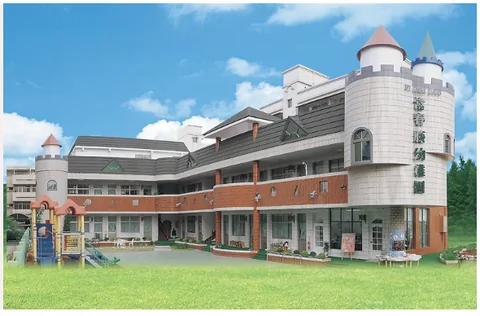
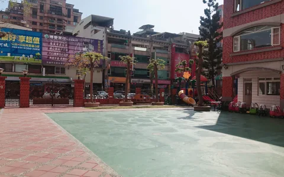
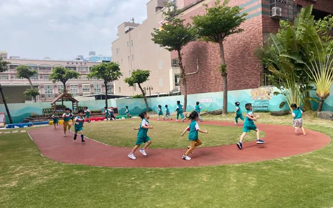
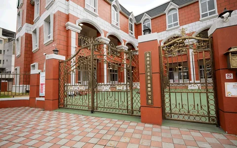
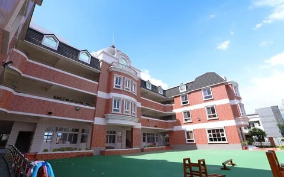

站上台說英語的那一天
摘要放受訪者本人確認過的一段話，約 60 到 80 字；刊出前要有書面同意，同意書編號只記在素材庫。
方向 page＋together · /story 彙整頁（/30 永久轉址）· 虛線框＝示意
註記同 /about就是 /about「一路走來」的五個年份，改成照真實比例的刻度（1997 在 0%、2021 在 80%、2027 在 100%）。2005 到 2020 的空白照實留著，不放字也不放圖。線本身 aria-hidden，每個刻度是一個錨點連結，點擊區 ≥44px；2020、2021 上下錯開。
1997 · 民國 86 年
第一間常春藤，在三民區義華路成立。
2001 · 民國 90 年
走進左營區，有了第二所校園。
2005 · 民國 94 年
左營區的第二所校園。
2020 · 民國 109 年
在鳥松區球場路成立。
2021 · 民國 110 年
第五所校園，在仁武區成立。
2027 · 民國 116 年
Our campuses
註記同 /about＋首頁五校五張卡字級一樣，只寫「YYYY 年成立」，不寫「本校第 N 年」，也不和週年數字並排。義華多一個小標籤，只放在照片角落，不放大數字。

第一間常春藤示意



Events
註記新內容園方確認有真實活動才出現。每列放既有的 BookingCta，依該校預約模式變成表單、LINE、電話或暫停，入口記為 anniversary。不做報名、RSVP、付款。
示意／日期未定
預約參觀義華校註記活動日一過，同一列依台北日期移到這一欄，預約鈕保留，改成預約平常的參觀。
Our hope
在名為全世界的舞台，展現自我、發光發熱。
註記同 /about兩句都是機構站原文，也是 /about 03「我們的期許」。不另造主題標語。
註記同 /about結尾同一句「五所校園，歡迎你來走走。」，多了五校成立年份的文字連結。主選單不加第 5 項；入口放頁尾、首頁推薦消息、/about 結尾和分校頁「本校的故事」。